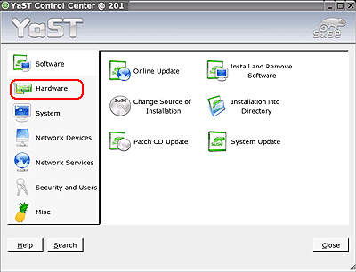
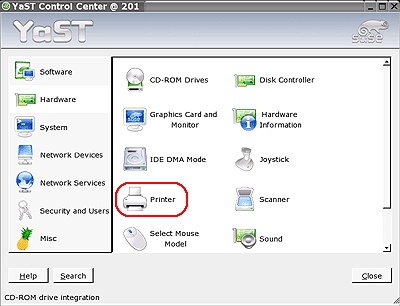
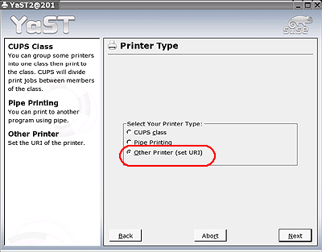
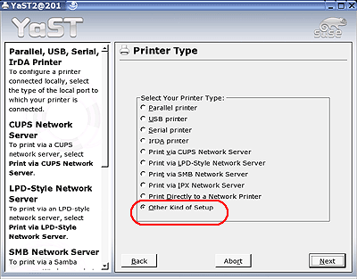
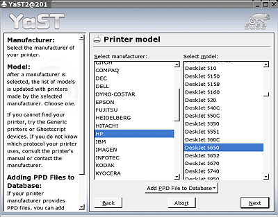

Installation - Step 4 - SUSE
Note: The instructions hp-setup tool should be able to easily configure your printer in SUSE. If you continue to have problems then please follow these instructions.
- Use a USB/Parallel cable to connect the printer to the computer or connect the printer to a network.
Note: See your printer documentation for specific instructions on connecting the USB, Parallel or Network cable to your printer and computer.
- If you are connecting your printer via a network interface use the above network instructions to determine the network printer address using the hp-makeuri process.
- Open a console/terminal window.
- Enter this command:
hp-info
- Copy the device URI for your printer. (Example: "hp:/usb/OfficeJet_6100_Series?serial=MY27H134G22R")
Follow these steps to open the YaST Printer Configuration tool:
- Click the Menu button -> System -> YaST.
- In the left pane of the YaST dialog box, click Hardware.

- In the right pane of the YaST dialog box, click Printer.

Follow these steps to configure the printer:
- On the YaST Printer Configuration dialog box, click Other in the Printers to Configure list, and then click Configure.

- In the Select your Printer Type list, click Other kind of setup, and then click Next.

- In the URI text box, paste the URI you copied in step 2c, and then click Next.
On the Queue name dialog box do these steps:
- Enter a name for your HP printer in the Name box.
Note: The name you enter must not contain spaces.
- Enter a description of the printer in the Description of Printer box.
- Click Next.
On the Printer Model dialog box, do these steps:
- Under Select manufacturer, click HP.
- Under Select model, click the printer model.

- Click Next.
- Review the configuration, and then click OK.
- Click Finish.
The system saves the print queue.
Follow these steps to print a test page:
- Open the HP Device Manager:
- Open a console/terminal window.
- Enter this command:
hp-toolbox
Note: You can also open the HP Device Manager by using the GNOME or KDE menu system.

- Click your HP printer in the left pane.
- Click the Tools & Settings tab, and then click Print Test Page.